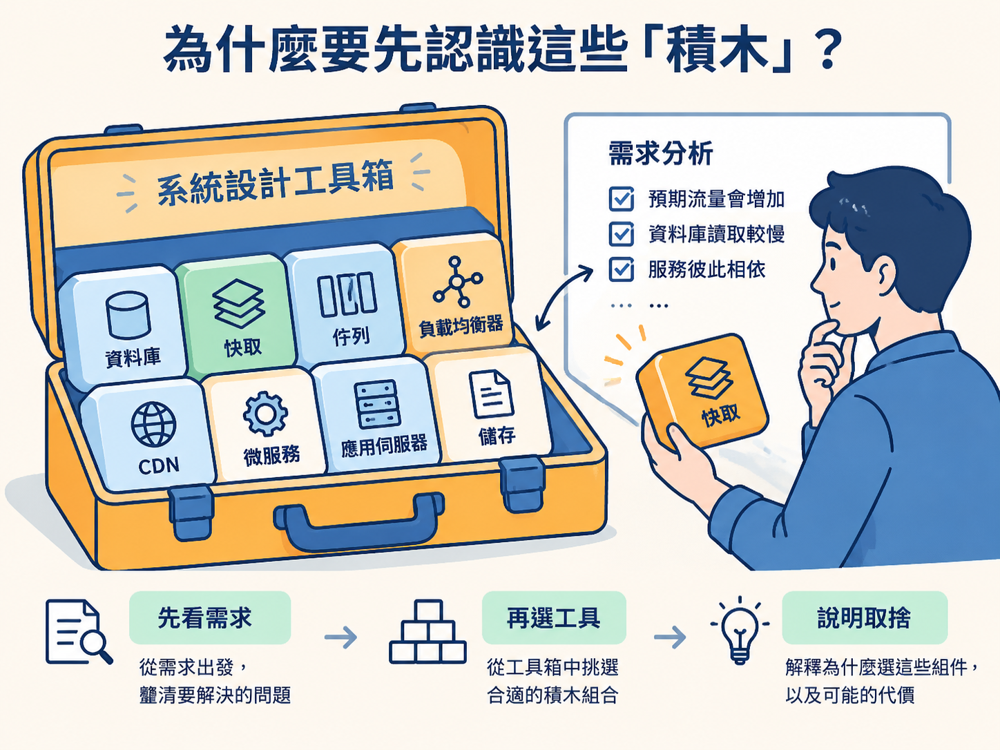
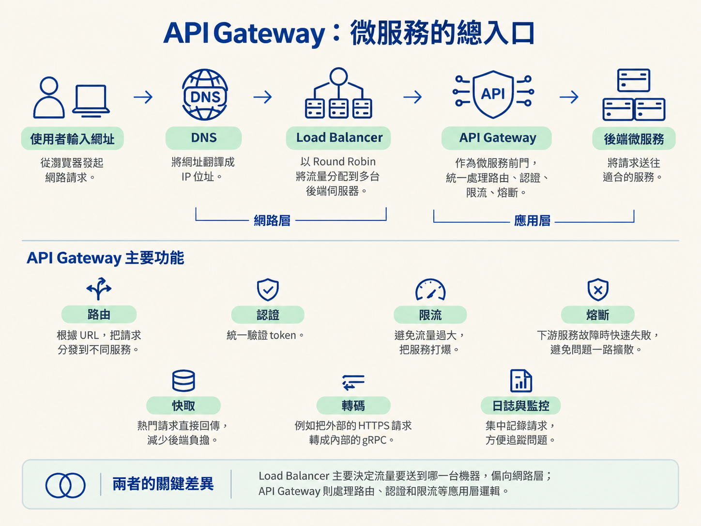
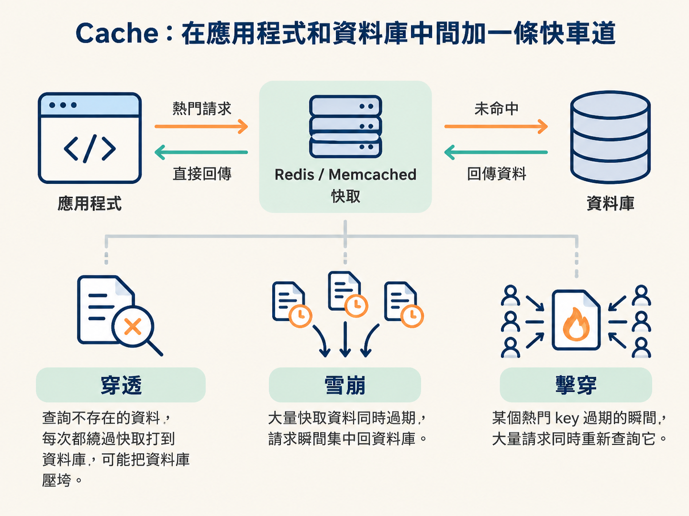
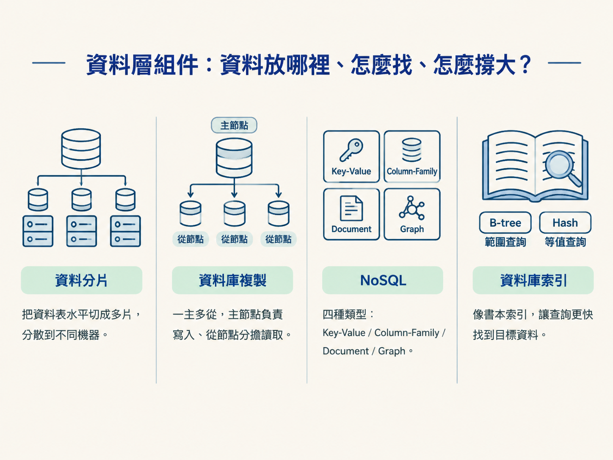
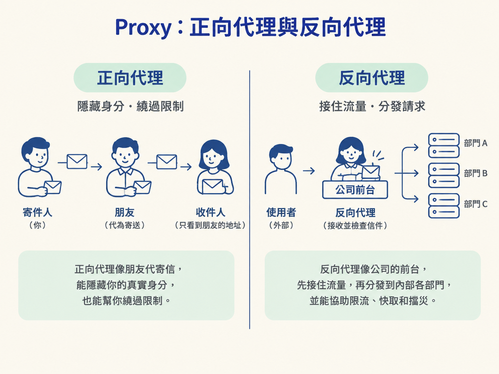

認識 DNS、Load Balancer、API Gateway、CDN、Proxy、Cache、Partitioning、Replication、Messaging、Microservices、NoSQL、Index、Distributed FS、Notification 等常見組件，並在步驟 5～6 的架構設計中，根據需求靈活選用。
系統設計面試的步驟 5～6，通常會要求你畫出架構圖、說明資料怎麼流動，並解釋為什麼選這些組件。這些組件就像一盒積木：你不必把每一塊都研究到實作細節，但要知道它解決什麼問題、會付出什麼代價，以及什麼時候適合使用。
這也和你前面練習的需求分析直接相關。當你發現系統需要承受更多流量，就要思考如何分散負載；當資料庫讀取太慢，就要考慮快取或索引；當服務彼此牽一髮動全身，就要思考訊息佇列或微服務。
面試時不要一看到「效能問題」就喊出「我要用 Redis」。比較好的思考順序是：先說明需求，再選工具。例如：「這裡需要一層快取，降低資料庫讀取壓力；Redis 是一個選擇，Memcached 也可以，差別在於……」

DNS（Domain Name System，域名系統）負責把人類看得懂的網址翻譯成 IP 地址。使用者輸入網址後，DNS 通常是流量踏出的第一步。
在面試中，你通常不需要深入 DNS 的實作細節，但要知道它是請求進入系統前的重要入口。這和你之前畫請求流程時的「使用者 → 伺服器」有關：在真正抵達伺服器之前，系統得先知道這個網址要對應到哪個 IP。
Load Balancer（負載均衡器）會把流量分配到多台伺服器，是系統從單機走向分散式架構的重要一步。常見的分配方式包括 Round Robin、Least Connections 和 IP Hash。
它的價值不只是「分流」。多台伺服器可以一起處理請求，其中一台故障時，其他伺服器仍能繼續服務；多個 Load Balancer 也能互相備援，避免單點故障。
這和你先前思考「如何處理流量成長」的問題直接相連：單機的上限到了，就可以透過增加機器，再由 Load Balancer 把工作分出去。
API Gateway可以想成微服務系統的前門，所有外部請求先經過這裡，再被送往適合的服務。它通常會負責：
API Gateway 和 Load Balancer 很容易混在一起，但兩者關心的事情不同：Load Balancer 主要決定流量要送到哪一台機器，偏向網路層；API Gateway 則會處理路由、認證和限流等應用層邏輯。

CDN（Content Delivery Network，內容分發網路）會把靜態資源快取到全球各地的邊緣節點。使用者可以就近取得圖片、影片或其他靜態檔案，不必每次都回到主要伺服器，因此能大幅降低延遲。
CDN 特別適合讀多寫少的場景。這和你之前區分讀取流量與寫入流量的思考方式有關：如果內容大多被讀取、很少變動，就很適合提前放到靠近使用者的位置。常見產品包括 Cloudflare 和 AWS CloudFront。
Cache（快取）通常使用 Redis 或 Memcached，在應用程式和資料庫之間增加一層高速存取。熱門資料先放在快取裡，下一次請求就不用再次查詢資料庫。
快取真正棘手的地方，不是「把資料放進去」，而是「什麼時候把它移除或更新」。常見陷阱有三種：
所以，當你在設計中提出「加快取」時，也要接著說明失效策略，以及如何避免這三種問題。這才是完整的設計思考。

Data Partitioning（資料分片）會把資料水平切分到多台機器，讓多台機器一起承擔寫入與儲存壓力。水平分片（sharding）是切分資料列，垂直分片則是切分欄位。
它的代價是跨分片查詢會變得複雜。這和你之前思考「如何水平擴展」有直接關係：資料分片可以讓系統容納更多資料與寫入量，但查詢邏輯也不再像單一資料庫那麼簡單。
Database Replication（資料庫複製）常見做法是一主多從：主節點負責寫入，從節點複製資料並分擔讀取。這能提升系統的可用性和讀取效能。
不過，從節點可能存在複製延遲，因此剛寫入的資料不一定立刻在所有節點出現。這就是可用性、讀取效能與一致性之間的取捨。當你在架構圖中畫出主從資料庫時，也要記得說明這個一致性風險。
NoSQL不是單一種資料庫，而是一組適合不同資料與查詢模式的資料庫類型：
因此，不要把 NoSQL 當成「一定比關聯式資料庫快」的替代品。應該先看查詢模式，再決定資料模型；這和你前面從需求出發選擇系統組件的原則是一樣的。
Database Index（資料庫索引）就像書本最後的索引：查詢時可以更快找到目標資料，而不必從頭翻到尾。B-tree 適合範圍查詢，Hash 適合等值查詢。
索引不是免費的。它能加速讀取，卻會增加寫入時需要維護的成本，因此可能拖慢寫入。當你遇到「查詢很慢」時，索引是候選解法；但如果系統寫入非常頻繁，就要同時評估索引帶來的負擔。

分散式訊息系統，例如 Kafka 和 RabbitMQ，可以用來解耦服務通訊。生產者把訊息放入系統，消費者之後再取出處理，兩者可以獨立擴展。
這和你之前思考非同步處理的方式有關：如果一個請求不需要立刻完成所有工作，就可以先把工作交給訊息系統，讓使用者較快收到回應，也避免某個服務暫時變慢時拖住整條流程。
Microservices（微服務）會把單體應用程式拆成多個可以獨立部署的小服務。好處是各服務可以獨立擴展和部署，例如只有訂單服務流量增加時，不必連整個系統一起擴容。
但拆分並不會讓複雜度消失，只是把複雜度從程式內部搬到服務之間。你需要面對網路延遲、資料一致性，以及服務發現等分散式系統問題。因此，面試時不要把微服務當成標準答案，而要說明為什麼系統需要獨立部署或獨立擴展。
Notification System（通知系統）通常使用佇列解耦通知發送。Email、Push 和 SMS 各自走獨立通道，某一種通道暫時故障時，不必讓其他通知一起停擺。
這正是訊息系統在實際案例中的應用：主流程只要產生「請發送通知」的訊息，後續由不同的消費者處理各種通知方式。
Forward Proxy（正向代理）可以想成朋友幫你代寄信。你寫好信，請朋友代為寄出，收件人看到的是朋友的地址，不一定知道真正寄信的人。
常見場景包括翻牆 VPN、公司內網閘道器，以及爬蟲使用的 Proxy Pool。當你需要隱藏自己的來源，或繞過特定網路限制時，就可能使用正向代理。
Reverse Proxy（反向代理）則像公司的前台。你把信寄到「台積電」，信件先送到公司前台，前台看過信封後，再決定轉交給哪個部門。
對外看起來，使用者只需要連到反向代理；後方實際有哪些伺服器，可以被隱藏起來。反向代理也能協助限流、快取和擋災，常見產品包括 Nginx 和 Cloudflare。
記住最實用的區分方式：Forward Proxy 是替使用者藏身或繞過限制；Reverse Proxy 是替伺服器接住流量、分發請求。如果你之前畫過「使用者 → 服務」的架構圖，Reverse Proxy 通常會放在服務前方，成為外部流量進入系統的入口。
